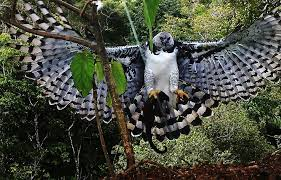
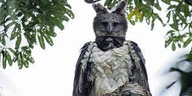
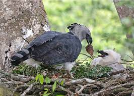

A Harpia é uma ave accipitriforme da família Accipitridae. É conhecido também como gavião-de-penacho, guiraçu (uirá, guirá = ave, açu = grande), gavião-real e uiraçu, gavião-rei, gavião-gato, urucotim, uiracotim, ouiracu, gavião-pega-macaco, pega-macaco.. Embora não seja a maior das aves predadoras do planeta, é tida como a mais forte. Possui bico potente e suas garras são maiores que as do urso pardo americano, suas pernas têm a grossura de um punho de um homem adulto. Tem um crescimento populacional muito lento. Este fato, associado à destruição de grandes áreas florestais e à caça indiscriminada, torna a espécie ameaçada de extinção em nosso País.
É uma águia enorme, sendo considerada a mais forte do planeta. É a maior ave de rapina brasileira. Mede entre 90 e 105 centímetros de comprimento e apresenta uma envergadura de mais de 200 centímetros. Os sexos são semelhantes, mas a fêmea é bem maior. Seu peso varia entre 4 e 4,8 quilogramas para o indivíduo do sexo masculino e entre 7,6 e 9 quilogramas para indivíduos do sexo feminino. Os adultos apresentam partes superiores na cor cinza escuro. As asas são largas, relativamente curtas e arredondadas. A cauda longa é barrada de branco e apresenta a ponta arredondada. As partes inferiores são brancas, com exceção de uma faixa cinza escura no peito. As coxas são brancas, finamente barradas de preto. A cabeça é cinza, mais pálida do que as demais partes superiores, com uma coloração cinzenta conspícua. Apresenta uma bela crista erétil com penas de diferentes tamanhos na porção occipital da cabeça. O bico em forma de gancho é robusto e de coloração cinza escura e apresenta a cere cinza escura quase preta. Os olhos são marrom escuros. Pernas e pés são amarelos. Os pés são fortes e equipados com longas garras negras. O imaturo precisa de 4 a 5 anos para alcançar a plumagem adulta. E para cada plumagem anual o jovem apresenta pequenas variações na coloração da plumagem, no número e na largura das barras da cauda. Os imaturos mais jovens com plumagem do primeiro ano apresentam plumagem geral de coloração cinza claro e branco; esta plumagem torna-se mais escura a cada ano até atingir a plumagem do indivíduo adulto.
Alimenta-se de animais grandes, como a preguiça-real, mutuns, coatás, macacos-prego e guaribas, filhotes de veados, araras-azuis, seriemas, tatus, cachorros-do-mato, iguanas e cobras. É rápido e forte em suas investidas, sendo capaz de arrancar preguiças agarradas a galhos de árvores. Há relato da captura de um macho de guariba que pesava em torno de 6,5 kg.
